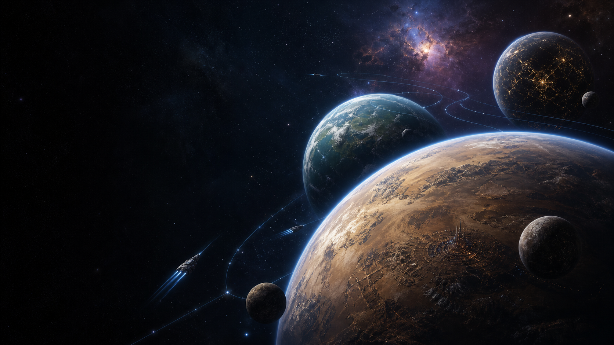

Coruscant
City-covered galactic capital, Senate seat, Jedi Temple home, and a symbol of civilization layered over inequality and political decay.

Places and powers
A navigable atlas of major Star Wars planets, moons, stations, hyperspace regions, and strange frontiers. Use the filters to jump from the Core to the Outer Rim, then into the places the Republic never fully mapped.
Complete atlas
Every card below is searchable and filterable by region or type, so the worlds are visible first instead of hidden under the Unknown Regions explanation.
Loading the full world archive...
City-covered galactic capital, Senate seat, Jedi Temple home, and a symbol of civilization layered over inequality and political decay.
Desert world shaped by moisture farming, Tusken tribes, Jawas, smugglers, Hutt influence, and Skywalker beginnings.
Hidden Sith world where Palpatine, the Sith Eternal, and the Final Order prepare a secret return.
Hidden space
The Unknown Regions sit beyond the familiar galactic routes, where unstable hyperspace lanes, gravity anomalies, ancient dangers, and poor mapping make travel difficult. They matter because several secret powers hide there, including the Sith Eternal on Exegol, the First Order's buildup, and the Chiss Ascendancy's guarded territory.